(в развитие СНиП II-26-76 "Кровли. Нормы проектирования"
и СНиП 3.04.01-87 "Изоляционные и отделочные покрытия")
Москва - 2005
|
2. КОНСТРУКТИВНЫЕ РЕШЕНИЯ МЕДНОЙ КРОВЛИ 4.3. Примыкания кровли к стене 5.2. Крепление подвесного желоба |
Рекомендовано к изданию решением секции строительных конструкций НТС ОАО «ЦНИИПромзданий» от 16 июля 2004 г., протокол № К-44.
В Руководстве приведены конструктивные решения кровли, требования к применяемым материалам и основанию под кровлю, технологические приемы устройства кровли с использованием медных лент или листов, а также правила приемки и техники безопасности кровельных работ.
Руководство предназначено для инженерно-технических работников проектных, строительных организаций и служб эксплуатации.
В последнее десятилетие все большее применение в практике строительства находят кровли из листовой меди.
Отличительная особенность кровель из медных листов заключается в ее высокой стойкости к атмосферным воздействиям. Под влиянием атмосферных факторов на его поверхности образуется устойчивая окисная пленка-патина, она является естественным защитным покрытием меди, надежно предохраняющим ее от коррозии.
Эксплуатационная надежность кровель в значительной мере зависит от обоснованности конструктивного решения и качества выполненных работ. В этой связи актуальной является задача разработки Руководства, в котором изложены указания по проектированию и устройству таких кровель.
Руководство разработано в развитие главы СНиП II-26-76 «Кровли. Нормы проектирования» и главы СНиП 3.04.01-87 «Изоляционные и отделочные покрытия».
Разработано отделом покрытий и кровель ЦНИИПромзданий (кандидаты техн. наук С.М. Гликин, A.M. Воронин, В.В. Иванов) с участием главы компании «Европейский институт меди» г-на Ионова B.C.
К печати Руководство подготовил ст. научный сотрудник отдела, к.т.н. Иванов В.В.
Замечания и предложения по Руководству просьба направлять по адресу: 127238, Москва, И-238, Дмитровское шоссе, д.46. ЦНИИПромзданий, отдел покрытий и кровель.
1.1. Настоящее Руководство распространяется на проектирование и устройство новых и ремонт существующих фальцевых кровель из медных лент или листов в зданиях различного назначения.
Применение других методов устройства медных кровель (дранковое, Русский лемех и т.д.) не все положения настоящего Руководства можно применять.
1.2. Медные ленты или листы рекомендуется применять предпочтительно для устройства кровель на уклонах не менее 30% (16°), в том числе со сложным очертанием профиля.
При устройстве кровель на уклонах от 7° до 16° следует уделять особое внимание обеспечению герметизации фальцевых соединений и вентиляции подкровельного пространства,
1.3. При проектировании и устройстве металлических кровель, кроме настоящих рекомендаций должны выполняться общие требования норм проектирования кровель, правил техники безопасности в строительстве, действующих правил по охране труда и противопожарной безопасности.
1.4. Кровля из листовой меди должна быть проверена на воздействие ветровых нагрузок в соответствии СНиП 2.01.07-85* «Нагрузки и воздействия».
1.5. Работы по устройству кровель из меди должны выполняться специализированными организациями, имеющих лицензию на право производства таких работ.
1.6. К производству работ допускаются рабочие, прошедшие медицинский осмотр, обученные технике безопасности и методам ведения этих работ.
2.1.1. Для устройства кровли используют:
- ленты медные ГОСТ 1173-93, ГОСТ Р 50/48-92, ГОСТ 20707-80, ТУ 48-21-5055, ТУ 48-21-5003, ТУ 48-21-59, которые относятся к мягким материалам с регламентированной величиной зерна. Поверхность лент должна быть чистой, края ровно обрезаны без заусенцев. Серповидность лент не должна превышать 3 мм на 1 м длины.
В качестве импортной продукции допускается использование только медной ленты по европейскому стандарту EN 1172 с соответствующей маркировкой.
Основные геометрические параметры лент приведены в таблице 1, а физико-технические свойства в таблице 2.
Таблица 1
|
Толщина, мм |
Ширина, мм |
Предельное отклонение по толщине лент при ширине до 600 мм |
Предельное отклонение по ширине лент при ширине 600 мм и более |
Внутренний диаметр рулона, мм |
|
0,55-0,6 |
500-700 |
-0,80 |
1,2 |
40÷500 |
При использовании медной ленты с иными значениями номинальной толщины и ширины, необходимо руководствоваться правилом, что номинальная ширина полосы равна номиналу толщины умноженной на 1000, т.е. при толщинах 0,5; 0,6; 0,7 ширина полосы соответственно составляет 500;600 и 700 мм.
Применение ленты с большими значениями номинальной толщины приводит к удорожанию кровли.
Наиболее распространенная стандартная ширина медных листов - 530 мм, кроме того имеются медные полосы шириной 600 мм и толщиной 0,6 мм.
|
№№ пп |
Наименование показателя, ед, измерения |
Величина |
|
1. |
Временное сопротивление разрыву, Н/мм2 (кгс/мм2) |
200-260 (20-26) |
|
2. |
Относительное удлинение, не менее % |
36 |
|
3. |
Твердость по Виккерсу, НУ |
40-65 |
|
4. |
Коэффициент линейного расширения, мм/м |
1,7 |
|
5. |
Масса 1 м2 медной ленты (кг), толщиной 0,5 мм |
4,480 |
|
|
То же 0,6 мм |
5,376 |
|
|
То же 0,7 мм |
7,272 |
2.1.2. Для устройства пароизоляции покрытия рекомендуется применять:
- армированный полиэтилен (типа «Унифлон Н»);
- полимерную композитную пленку «Слафол-ПП» ТУ 1936-001-51-26-38-82, производитель Торгово-Производственная Компания «Славяновская»;
- полимерную пленку «Изоспан» ТУ 8397-013-18-60-34-95-2001, производитель фирма «Гекса»;
- полимерные пленки из нетканых материалов группы «Ютафол H», фирмы «ЮТА ИТА» производство Чехия;
- специальные пленки для создания паронепроницаемых барьеров «Fatrapan-21» производство Чехия.
2.1.3. Для герметизации фальцев и стыковых соединений рекомендуются:
- клей-герметик кремний органический марки «Эластосил 11-06 и др., удовлетворяющие требования ГОСТ 25621-83;
- полиуретановый герметик Эмфимастика PU-40, изготовитель EMFi (Франция), поставщик - ООО «Высотремстрой Вайс»;
- герметик тиксопрол - AM - марка 0,1, 05 ТУ 5712-004-18009705-95, мастика СГ-1 ТУ 2513-001-32478306-95 и герметик гермабутал марки: 1; 2; 2М; УМ; ТУ 204329-91, изготовитель ООО НПФ «Герметика»;
- строительная мастика «Гермобутил» ТУ 2513-444-05011868-99, изготовитель ОАО «Ярославрезинотехника»;
- двухкомпонентная мастика - герметик «Элуар-2» производитель ЗАО «ТСК».
2.1.4. При устройстве кровли все крепежные детали (кляммеры, Т-образные костыли, штыри, крепления водосточных труб, воронок, желобов и др.) должны выполняться из меди.
2.1.4.1. Кляммеры изготавливают из листов меди такой же толщины или из нержавеющей стали.
2.1.4.2. Для крепления кляммеров к деревянному настилу толщиной 24 мм применяют:
- медные гвозди, рифленные - 2,8×25 мм;
- гвозди из нержавеющей стали, рифленные - 2,8×25 мм.
К деревянному настилу толщиной 22 мм, используются гвозди меньшей длины и увеличение числа кляммеров. Кляммеры должны закрепляться к настилу двумя гвоздями, расчетное усилие на выдергивания кляммера составляет 500Н.
2.1.4.3. Для винтовых соединений рекомендуются винты из нержавеющей стали - 4×25 мм.
2.1.4.4. Скобы для крепления медных кляммеров выполняются из нержавеющей стали из проволоки диаметром не менее 1,5 мм. Ширина скобы должна быть не менее 10 мм, высота отгибов не менее 25 мм.
Основанием под кровлю могут служить:
- деревянный сплошной настил из брусков или досок хвойных пород (ГОСТ 24454-80*) толщиной не менее 24 мм (в досках предусматриваются шпунтовые соединения). Толщину настила определяют расчетом на воздействие расчетной нагрузки с учетом шага стропил. Хвойная древесина должна быть антисептирована.
- настил из атмосферостойкой бакелизированной фанеры ФБС и ФБС1 (ГОСТ 11539-73) толщиной 22…24 мм.
Между медной кровлей и основанием под нее должен быть предусмотрен подстилающий слой, который рекомендуется выполнять из рубероида с посыпкой марок РКК-420А. РКК-420Б, РКК-350Б (ГОСТ 1093-64*), битумно-полимерных рулонных кровельных материалов со стекловолокнистой армирующей основой или безосновных материалов (гидроизол, по ГОСТ 7415-86, изм. № 2, изол по ГОСТ 10296-79 изм. № 2 и др.), а также из полиэтиленовой пленки по ГОСТ 10354-73 и др.
Материалы подстилающего слоя прибивают к поверхности основания гвоздями с шагом 120 мм. Нахлест полотен должен составлять не менее 80 мм.
Для противоветрового слоя рекомендуются следующие материалы:
- гидроветрозащитная паропроницаемая мембрана (рулонная) Ди Pont Туvek® (Тайвек) производитель США;
- подкровельная паровыводящая гидроизоляция «Слафол-ДИФ 100» производитель Торгово-Производственная Компания (ТПК) «Славянская», Россия;
- влагозащитная паропроницаемая мембрана «Изоспан А» ТУ 8397-013-18-60-34-95-2001, производитель фирмы «Гекса», Россия,
Кровля из медного листа может быть выполнена вентилируемой и невентилируемой.
а) Вентилируемая кровля
2.5.1. Вентилируемую кровлю выполняют, как правило, над холодным чердаком и на утепленном совмещенном покрытии (рис.1). В последнем случае между, с целью исключения возможности конденсации на внутренней поверхности кровли, медной кровлей и теплоизоляцией необходимо предусмотреть продухи (зазоры).
Естественная вентиляция продуха обеспечивается через входные и выходные отверстия.
2.5.2. Входные отверстия продуха должны быть выполнены в виде сплошных щелей и располагаться на самой низкой точке крыши (карниза), а выходные - на самой высокой точке (коньке).
Размеры входного отверстия устанавливаются из расчета 2% от площади кровли (но не менее 250 см2 на пог.м), и выходного отверстия - 0,5%. Высота поперечного сечения вентиляционного канала над теплоизоляцией должна быть не менее 5 см.
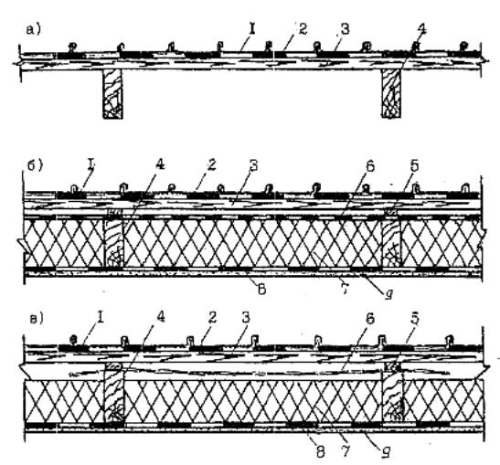
а - над холодным чердаком; б - над утепленным покрытием с одним вентиляционным каналом; в - то же, с двойным вентиляционным каналом; 1 - фальцевая медная кровля; 2 - подстилающий слой; 3 - сплошной настил из досок хвойных пород; 4 - стропила; 5 - дистанционный брусок; 6 - противоветровой слой из водоизоляционного паропроницаемого материала; 7 - теплоизоляция; 8 - пароизоляция; 9 -потолок.
При установке на входных и выходных отверстиях металлических сеток от насекомых, ширина вентилируемой щели должна быть увеличена не менее чем на 45%.
2.5.3. Для обеспечения надежной пароизоляции рекомендуется выполнять обжатый стык между полотнищами пароизоляционных рулонных материалов (рис.2).
2.5.4. Во избежание образования застойных зон вентиляционные каналы длиной более чем 15м необходимо делить на отдельные секции.
Не допускается предусматривать сужение канала, наличия преград и изменения его направления, т.к. при этом снижается эффект естественной вентиляции, что может привести к накоплению влаги в покрытии.
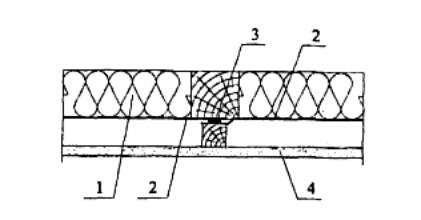
1 - теплоизоляция; 2 - пароизоляция; 3 - герметизирующая полоса; 4 - потолок, например, гипсокартон.
б) Невентилируемая кровля
2.5.5. Невентилируемую медную кровлю (см. рис.3) предусматривают при условии невозможности устройства вентиляции.
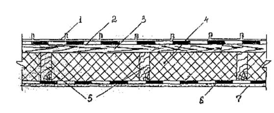
1 - фальцевая медная кровля; 2 - подстилающий слой; 3 - сплошной настил из досок хвойных пород; 4 - слой теплоизоляции; 5 - стропила; б - пароизоляция; 7 - потолок.
3.1. До начала кровельных работ должны быть выполнены и приняты по актам:
- все строительно-монтажные работы, включая установку вентиляционных патрубков, патрубков или стаканов для пропуска инженерного оборудования, устройство вентшахт, шахт дымоудаления, шахт лифта, выхода на кровлю и др., а также устройство печной и каминной труб;
- слои паро- и теплоизоляции;
- основание под кровлю, ендов и места примыканий кровли к выступающим конструктивным элементам (вентшахты, вытяжные трубы и др.).
3.2. Соединение медных листов кровли в направлении вдоль ската осуществляют с помощью стоячих фальцев. Готовый фальц имеет высоту 25 мм (рис.4).
Для возможности восприятия температурных деформаций медной кровлей кромка одного из стыкуемых листов выполняется наклонной с образованием зазора около 3 мм (рис.5). В связи с чем осевые размеры ширины листа увеличиваются на величину + 3 мм (рис.4с), а для крепления картин использовать скользящие кляммеры.
3.3. Для жесткого крепления картин к основанию применяют кляммеры, которые закрепляют гвоздями к основанию (рис.6). На основных поверхностях кровли рекомендуется устанавливать на 1 м2 - 4 шт. кляммеров с шагом 400-500 мм. Для участков кровель по периметру здания, количество кляммеров увеличивают до 5 шт/м2 и уменьшают шаг до 350 мм.
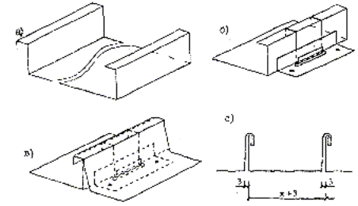
а) изготовление кромок на листе; б) установка скользящего кляммера на основание и кромку; в) установка второго листа с отогнутой кромкой с образованием двойного стоячего фальца.
3.4. В процессе эксплуатации материал кровли подвержен температурной деформации, вызывающей изменение длины медного листа. С этой точки зрения наиболее эффективно использование скользящих кляммеров (рис.7).
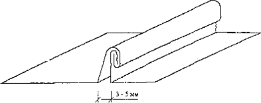
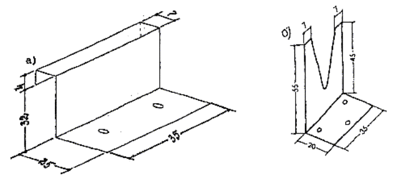
3.5. Оптимальная длина картины ската медной кровли при закреплении ее с применением стандартными скользящими кляммерами составляет 10 м (рис.7а). В случае, если крыша имеет простую конфигурацию с небольшим уклоном, длину картин ската можно увеличить до 15 м и использовать для крепления их к основанию специальные скользящие кляммеры (рис.7б).
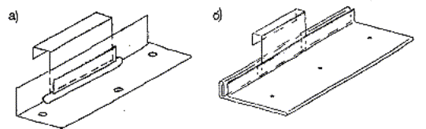
а) стандартный скользящий кляммер; б) специальный скользящий кляммер.
При длине ската кровли более 10 м необходимо предусматривать температурный шов, который разделяет кровлю на отдельные секции.
Стык медных листов в направлении перпендикулярном скату осуществляют с помощью лежачих фальцев. В зависимости от уклона могут быть предусмотрены:
- одинарный лежачий фальц для кровель с уклоном 25° (45%) и более (рис.8а);
- двойной лежачий фальц для кровель с уклонами от 16° (30%) до 25° (45%) (рис.8б).
3.6. Лежачие фальцы смежных листов должны располагаться вразбежку (рис.9).
3.7. Кровельные листы, уложенные по традиционной технологии с закреплением одиночным фальцем не могут компенсировать тепловые перемещения по длине листа. Поэтому листы соединяют вместе двойным стоячим фальцем, который исключает скольжение листов относительно друг друга, и картины к основанию закрепляют скользящими кляммерами.
Медные листы в поперечном направлении соединяются между собой одиночным лежачим фальцем, а с основанием с помощью сплошного кляммера. В продольном направлении картины закрепляют вдоль стоячего фальца скользящими кляммерами (рис.9).
3.8. На скатах кровель до 3 м выполняется жесткое крепление картин к основанию, т.к. незначительные температурные деформации медного листа в этом случае воспринимаются обычными кляммерами.
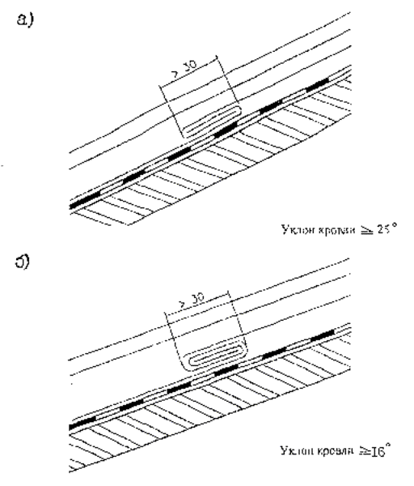
а) одинарный; б) двойной
4.1.1. В настиле у карниза предусматривают углубления приблизительно на 5 мм под кронштейны для установки желобов (рис. 10).
4.1.2. Карнизные планки закрепляют гвоздями к настилу, после установки кронштейна. Подвесной желоб устанавливают в полукруглую часть кронштейна с закреплением на крючки.
4.1.3. Отдельные карнизные планки с максимальной длиной 3,0 м соединяют скобами (с зазором 3 мм) или нахлестом в 20 мм. Для закрепления их используют медные кровельные гвозди 2,8×25 мм, располагая их в шахматном порядке с расстоянием 100 мм.
Короткая нижняя консоль карнизной планки располагается в верхней части желоба (рис. 11а) или устраивают консоль с длинным вертикальным свесом, который закрепляется на заднем загибе профиля желоба (рис, 11б)
4.1.4. Лист кровли на карнизе должен всегда завершаться стоячим фальцем. Существует две формы двойного стоячего фальца - с квадратными или скошенными кромками (рис. 12),
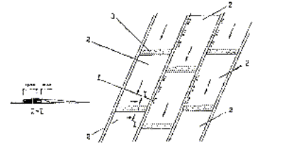
1 - скользящий кляммер; 2 - медные листы. 3 - одиночный лежащий фальц со сплошным кляммером.
4.1.5. Перепад поверхности кровли с разными уклонами предусматривают в форме излома с целью обеспечения температурных деформаций скатов. Для скатов длиной более 3 м предусматривают разрывы в стоячих фальцах (рис. 13а), а при меньшей дайне используют непрерывные фальцы (рис. 13б).
4.1.6. На кровлях со скатами длиной более 10 м предусматривают компенсационные соединения, которые ограничивают длину ската 10 м, для обеспечения восприятия температурных деформаций картин в эксплуатационный период. Для этого предусматривают устройство конструктивных ступеней высотой не более 60 мм (рис. 14а).
4.1.7. Для кровель с небольшими скатами (менее 10 м) устраивают ступени высотой 10-15 мм. Устройство компенсатора для восприятия температурных деформаций предусматривается при монтаже медной кровли, который позволяет параллельное перемещение участков кровля при тепловых расширениях (рис.14б, с).
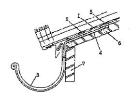
1 - карнизный свес; 2 - подстилающий слой; 3 - полукруглый водосточный желоб; 4-кронштейн водосточного желоба; 5 - медная кровля; 6 - основание под кровлю; 7- стена.
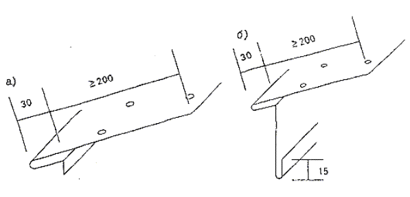
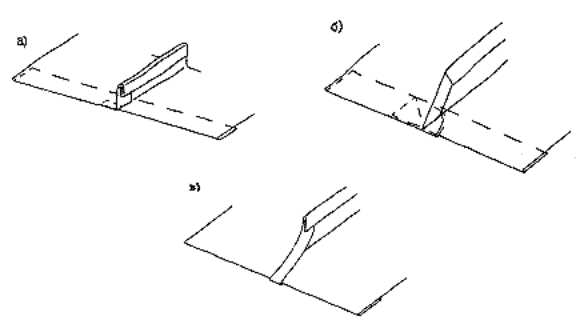
а) и б) с квадратными кромками, в) со скошенными кромками.
4.2.1. Вентилируемый конек устраивают из отдельных элементов (секций) конька, которые устанавливают в продольном направлении конька с нахлестом и закрепляют за медные кронштейны (рис.15).
Высота конька должна быть не более 150 мм.
4.2.2. На фронтоне конек может отступать от фронтона (рис. 16а) сужаться к концу фронтона (рис. 16б) или выступать за фронтон (рис. 16с).
4.2.3. При отсутствии вентиляции устраивают тавровый фальцевый конек, на котором в продольном направлении устанавливают медные кронштейны с шагом 600 мм, за которые закрепляют листы скатов кровли (рис.17).
В продольном направлении секции конька соединяются в нахлестку, что обеспечивает надежность стыков и восприятие температурных деформаций.
Стоячие фальцы, расположенные на скатах кровли и подходящие к коньку можно располагать в створе друг против друга.
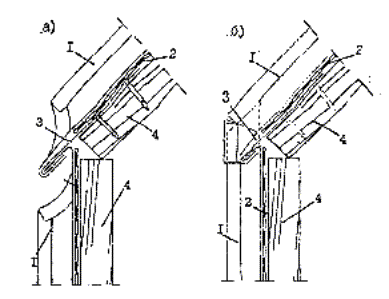
1 - стоячий фальц со скошенными кромками; 2 - подстилающий слой; 3 - карнизный свес; 4 - основание под кровлю.
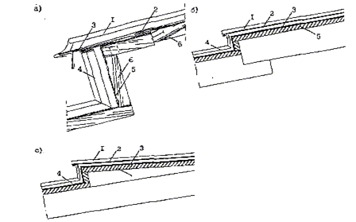
а) 1 - стоячий фальц со скошенными кромками; 2 - лежачий фальц со сплошным кляммером; 3 - карнизный свес; 4 - фальцевал медная кровля; 5 - подстилающий слой; 6 - основание под кровлю,
б, с) 1 - стоячий фальц с квадратными кромками; 2 - карнизный свес; 3 - подстилающий слой; 4 - фальцевая медная кровля; 5 - основание под кровлю.
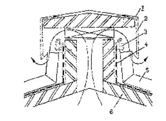
1 - обделка конька медным листом; 2 - медный кронштейн; 3 - лежачий фальц; 4 - подстилающий слой; 5 - фальцевал медная кровля; б - основание под кровлю.
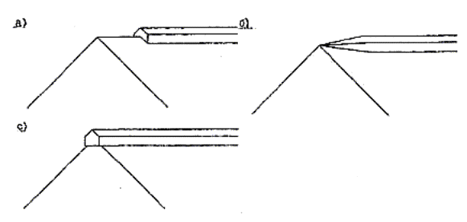
4.3.1. В местах примыкания кровли к стене листы медной кровли заводятся на стену на высоту не менее 300 мм и закрепляются к ней с помощью медных кронштейнов.
Торцы листов перекрывают медным фартуком водослива, который заводится под фасонный медный элемент с заполнением зазора, в местах примыкания фартука, герметизирующим составом (рис.18).
4.4.1. При двойном стоячем фальце для восприятия температурных деформаций медных листов длину разжелобка ограничивают 3 м (рис. 19). Картина разжелобка в продольном направлении с двух сторон закачивается двойным стоячим фальцем (рис.20).
4.4.2. Соединение картин разжелобка с основанием выполняется рядовым медным кляммером и одиночным лежачим фальцем, а закрепление фальцевой кровли осуществляют фасонным сплошным медным кляммером. При такой конструкции крепления картин разжелобка возможны перемещения фальцевой кровли при тепловых расширениях (рис.21).
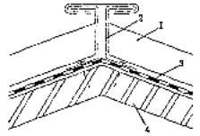
1 - стоячий фальц; 2 - медный кронштейн; 3 - подстилающий слой; 4 - основание под кровлю.
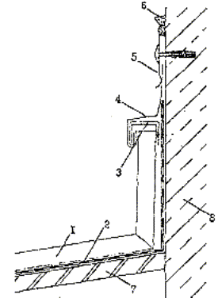
1 - медная фалъцевая кровля; 2 - подстилающий слой; 3 - медный кронштейн; 4 - медный фартук водослива; 5 - медный фасонный элемент; б - герметизирующая мастика; 7 - основание под кровлю; 8 - стена.
Картины разжелобка закрепляются к основанию рядовым медным кляммером и одиночным лежачим фальцем. Такая конструкция крепления разжелобка обеспечивает перемещение фальцевой кровли при тепловых расширениях (рис.22).
5.1.1. В основном применяют карнизные водосточные желоба: полукруглые или желоба коробчатого сечения, которые должны поставляться в комплекте с водосточной трубой и дополнительным оборудованием.
5.1.2. Наиболее распространенным типом карнизного водосточного желоба является полукруглый желоб (рис.23). Полукруглое сечение обеспечивает благоприятные условия для стока дождевой воды, а также обладает большей жесткостью по сравнению с коробчатыми.
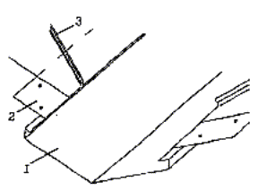
1 - картина разжелобка; 2 - медный кляммер; 3 - стоячий фальц с квадратными кромками.
5.1.3. При применении желоба коробчатого сечения для обеспечения хорошего стока его устанавливают с уклоном.
5.1.4. При наличии парапета используют внутренний желоб (рис.25). При устройстве такого желоба особое внимание следует уделять герметичности сопряжения желоба с водосливом.
5.1.5. Для исключения возможности замерзания воды и образования льда в желобах, в зимний период, следует предусматривать систему их обогрева.
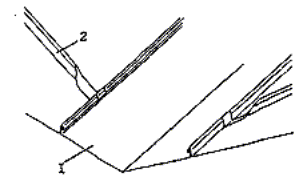
1 - картина разжелобка; 2 - двойной стоячий фальц со скошенными кромками.
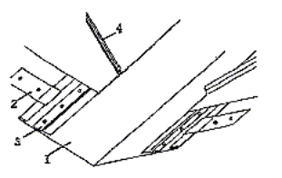
1 - картина разжелобка; 2 - рядовой медный кляммер; 3 - фасонный сплошной медный кляммер; 4 - двойной стоячий фальц с квадратными кромками.
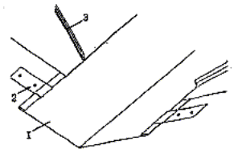
1 - картина разжелобка; 2 - медный кляммер; 3 - стоячий фальц с квадратными кромками.
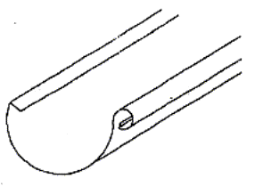
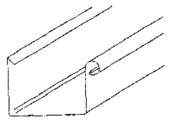
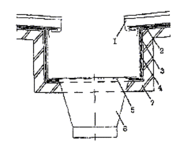
1 - стоячий фальц с квадратными кромками;.2 - карнизные планки; 3 - медная обделка желоба; 4 - подстилающий слой; 5 - медная решетка; б - воронкообразный водослив из кровельной меди; 7 - основание.
5.2.1. Карнизные водосточные желоба крепят к основанию на медных кронштейнах соответствующего сечения (рис.26).
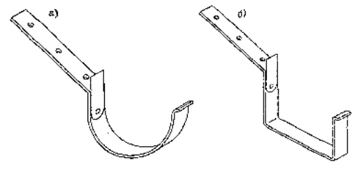
5.2.2. Желоб закрепляется к кронштейну медными хомутами с внутренней и наружной сторон, или выступами расположенными с наружной стороны желоба и хомутом внутри, в зависимости от типа применяемого кронштейна. Рекомендуемые в зависимости от размеров желоба, размеры сечения кронштейнов указаны в таблице.
5.2.3. Медные кронштейны должны крепиться к настилу не менее чем 2-мя медными гвоздями, гвоздями из нержавеющей стали или болтами, шляпки которых должны располагаться так, чтобы они были заподлицо с основанием под кровлю.
Кронштейны для медных желобов должны изготавливаться из меди с пределом прочности R240.
Таблица
|
Полукруглые желоба, размеры диаметра (размеры в обхват) |
Размеры поперечного сечения кронштейна |
|||
|
200 |
25×4 |
25×4 |
25×4 |
- |
|
250 |
24×4 |
30×4 |
5×6 |
- |
|
280 |
30×4 |
30×5 |
25×6 |
25×8 |
|
333 |
30×5 |
40×5 |
25×6 |
30×8 |
|
400 |
30×5 |
40×5 |
25×8 |
30×8 |
|
500 |
40×5 |
40×5 |
30×8 |
30×8 |
5.2.4. Уклон желоба должен быть не менее 1 мм/м. Это достигается с помощью установки кронштейнов различной длины. Особое внимание должно быть уделено закреплению желоба на расчетной отметке, чтобы избежать антиуклона. Внутренняя часть края желоба должна быть на 8 мм выше, чем наружная, чтобы при переполнении вода могла вытекать через наружный борт желоба (рис.27).
Внутренние желоба выполняют из медных листов или узких полос. Основание под желоба предусматривается из сплошного деревянного настила, по которому укладывается гидроизоляционный слой. Карнизные крепежные планки устанавливают вдоль каждой стороны и крепят к основанию (рис.28). Если размер по периметру больше, чем 670 мм или основание желоба шире, чем 250 мм, то медную обделку желоба приклеивают клеевым составом к основанию для повышения сопротивления ветровым нагрузкам.
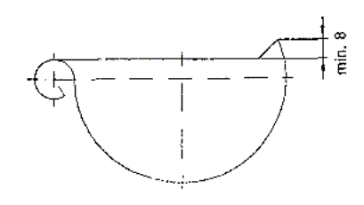
5.2.5. На карнизе устанавливаются карнизные планки, которые одной стороной заводятся на карниз на расстояние 150 мм, а другим концом закрепляются за отгиб, предусмотренный вдоль заднего края желоба с коротким вертикальным свесом (рис.28) или увеличиваясь вниз, он закрывает заднюю часть желоба длинным вертикальным свесом.
5.2.6. Карнизные планки устанавливаются вдоль карниза и прибиваются медными кровельными гвоздями. 2,8x25 мм, в шахматном порядке с шагом 100 мм.
5.2.7. Температурные деформации желобов компенсируются деформационными швами, расположенными по длине желоба, которые могут быть выполнены по следующим вариантам:
1. Скользящие соединения шва по краям желоба в верхней его части с двумя ограничителями и покровной полосой. У такого шва предусматривают два направления стока воды, так, чтобы поток воды не заходил на соединение (рис.29).
2. В соответствии с профилем желоба температурные швы выполняют из полосы вулканизированного неопрена (рис.30).
Такая полоса вырезается по внутреннему размеру желоба и соединяется с ним при помощи сварки. Медная покрывающая полоса затем укладывается на полосу из неопрена. Такой температурный шов можно использовать по уклону желоба.
5.2.8. Температурные швы, описанные в п.5.2.7 можно применять для внутренних желобов.
5.2.9. Длинные медные желоба соединяют друг с другом одним из следующих методов (рис.31).
Звенья желобов соединяют в нахлест равный:
- 10 мм, пайкой (сваркой) краев желоба;
- 30 мм, одним рядом заклепок с мягкой сваркой краев желоба;
- 30 мм, одним рядом заклепок, расположенных в шахматном порядке с мягкой сваркой краев желоба.
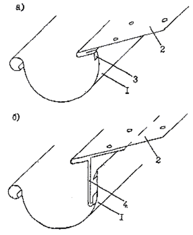
1 - полукруглый желоб; 2 - карнизная планка; 3 - короткий вертикальный свес; 4 - длинный вертикальный свес.
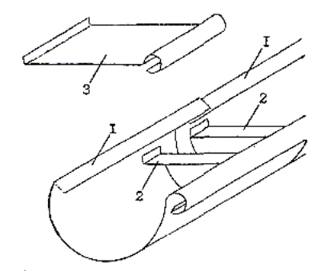
1 - полукруглый желоб; 2 - ограничитель; 3 - покровная полоса.
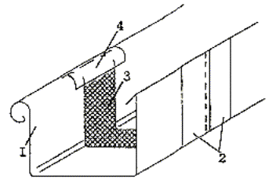
1 - желоб коробчатого сечения; 2 - две медные полосы; 3 - полоса из вулканизированного неопрена; 4 - медная покрывающая полоса.
5.3.1. Тип используемой водосточной медной трубы круглая или квадратная зависит от формы сечения желоба. Стандартная длина трубы составляет от 2 до 6 м. Продольный шов отдельных секций трубы может быть выполнен;
- мягкой сваркой (пайка);
- твердой сваркой;
- сшивкой (фальцевание).
В момент сшивания или сваривания трубы их слегка сужают на конце так, чтобы отдельные части можно было вставить на 50 мм друг в друга.
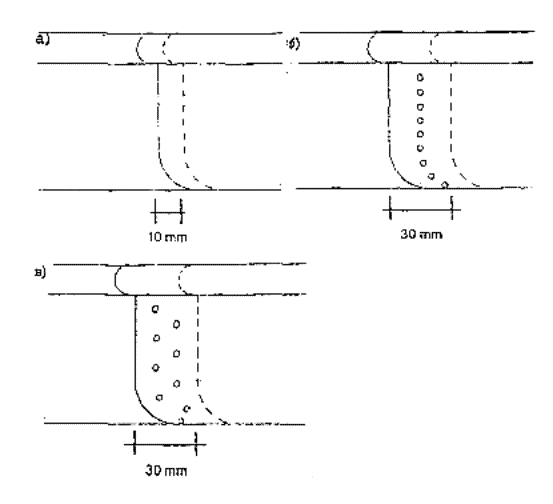
а) мягкой (пайкой) или твердой сваркой; б) мягкая сварка с одним рядом заклепок; в) мягкой сваркой с заклепками, расположенными в шахматном порядке.
5.3.2. Водосточные трубы крепят к стенам здания кронштейнами (рис.32).
При трубах диаметром 100 мм кронштейны размещают с шагом не более 3 м, а для труб больших диаметров -2 м.
В местах соединения водосточных труб образуется нахлест не менее 50 мм. На трубе имеется полуовальный выступ, который предохраняет ее скольжение.
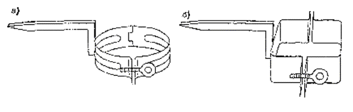
6.1. В процессе устройства кровель из медных листов проверяют:
- соответствие применяемых материалов требованиям действующих ГОСТов, ТУ и настоящего Руководства;
- правильность выполнения отдельных этапов работ,
- готовность отдельных конструктивных элементов покрытия и контроль для выполнения последующих работ.
Результаты проверок следует вносить в журнал работ.
6.2. Качество укладки отдельных картин и выполненной медной кровли устанавливают визуально:
- кровля в целом и их элементы не должны иметь трещин;
- в картинах, желобах и разжелобках не должно быть пробоин, коррозионных свищей, разошедшихся фальцев картин, грязи.
6.3. Обделки ендов, воронок и мест примыкания кровли к выступающим частям здания и конструкциям должны соответствовать требованиям проекта.
6.4. Заготовки из медных листов, в том числе рядовые картины, стыки листов, образующих желоба, должны иметь плотные соединения и расположены взакрой по направлению стока воды. Необходимо осуществлять контроль за устройством стоячих фальцев одинаковой высоты, их параллельном расположении относительно друг против друга и отсутствие трещин на гребне фальца.
6.5. Медная кровля должна плотно прилегать к обрешетке без видимых просветов, ряды листов должны располагаться перпендикулярно свесу или коньку.
6.6. При уклонах крыш менее 30° проверяют наличие двойных фальцев и их герметизацию. Отгибы картин для устройства лежачих фальцев следует принимать равными 15 мм, стоячих фальцев - 20 мм для одной и 35 мм для другой, смежной с ним картины.
6.7. После установки подвесного желоба, последний должен иметь уклон 1 мм/м, Закрепление желоба должно отвечать требованию, чтобы задняя стенка желоба располагалась на 8-10 мм выше передней, чем предотвращается переливание воды в сторону стены здания.
При монтаже элементов (звеньев) желоба должен быть предусмотрен компенсационный зазор.
6.8. При монтаже водосточных труб проверяется их вертикальность с помощью отвеса. Отдельные звенья должны прочно соединены между собой и закреплены к стене здания с шагом не более 2 м.
У каждой трубы жестко должен фиксироваться на стене только один хомут, второй хомут является лишь направляющей.
6.9. При приемке кровли должен осуществляться поэтапный приемочный контроль качества устройства пароизоляции, основания, промежуточного гидроизоляционного слоя и медной кровли с записью в журналах работ и составление актов на скрытые работы.
6.10. На каждом этапе приемки должен выполняться входной контроль качества используемых материалов на соответствие требованиям ГОСТ или ТУ на эти материалы.
Результаты входного контроля используемых материалов фиксируют в протоколах испытательных лабораторий, а данные приемочного контроля отдельных элементов покрытия в журналах организации, выполняющей кровли, а также в актах на скрытые работы.
При окончательной приемке кровель должны быть предъявлены данные о результатах лабораторных испытаний материалов, журналы производства работ, акты промежуточной приемки выполненных работ, исполнительные чертежи покрытия и кровли.
7.1. При устройстве медных кровель должны соблюдаться правила техники безопасности в соответствии с главой СНиП III-4-80 «Техника безопасности в строительстве», «Правила пожарной безопасности при проведении строительно-монтажных работ», М., «Стройиздат», 1978 г., а также требования настоящего раздела.
7.2. Работы по устройству кровель должны осуществляться специализированными организациями, имеющими лицензию на выполнение этих работ. К производству кровельных работ допускаются рабочие не моложе 18 лет, прошедшие медицинский осмотр, обучение правилам техники безопасности и методам ведения этих работ.
7.3. При устройстве кровель надлежит соблюдать правила по технике безопасности, прилагаемые к инструкциям по эксплуатации соответствующих механизмов.
7.4. Кровельщики должны пройти инструктаж по технике безопасности. Работающие непосредственно на кровле должны быть снабжены предохранительными поясами и капроновыми веревками длиной 10 м.
7.5. На время производства работ следует выделять участки работ, вокруг которых должны быть установлены границы опасной зоны, сигнальное ограждение, знаки безопасности и соответствующие надписи.
7.6. На крышах зданий высотой 10 м и более при уклоне крыши, превышающем 18%, должно быть предусмотрено ограждение в виде металлической решетки.
7.7. Выполнение работ по устройству кровель одновременно с другими строительно-монтажными работами на кровлях, связанными с применением открытого огня (сварка и т.п.) не допускается.
7.8. На крышах с уклоном более 30%, а также на мокрых или покрытых инеем или снегом, работы должны производиться с переносных (инвентарных) ходовых мостиков шириной не менее 300 мм.
7.9. При производстве работ на крыше с уклоном более 30%, а также в случае работы на свесах крыши при любых уклонах при отсутствии ограждений рабочие должны работать с предохранительными поясами и страховочными веревками, закрепленными к надежным элементам крыши.
7.10. Складировать на покрытии и крыше различные заготовки, штучные материалы и инструменты разрешается при условии принятия мер против их падения или сдувания ветром.
7.11. По окончании смены, а также на время перерывов в работе все остатки материалов приспособления необходимо убирать с покрытия (крыши) или надежно их закреплять.
7.12. Подъемные механизмы должны быть оборудованы двойными тормозными устройствами с безопасными рукоятками. Лебедки, устанавливаемые на земле, загружаются балластом.
7.13. Во время гололедицы, густого тумана, при наступлении темноты, если нет достаточного искусственного освещения рабочего места и проходов к нему, при ветре силой в шесть баллов и более, ливне и сильном снегопаде кровельные работы необходимо прекратить.
7.14. На кровле допускается хранить не более сменной потребности расходных материалов. Запас материалов должен находиться на расстоянии не менее 5 м от границы зоны выполнения работ.
7.15. Курить на крыше строго запрещается. Курить разрешается только в местах, специально отведенных для этой цели, где находится емкость с водой.
7.16. Электросеть всегда должна находиться в исправном состоянии; после работы необходимо выключать электрорубильники всех установок и рабочее освещение, оставляя лишь дежурное освещение.